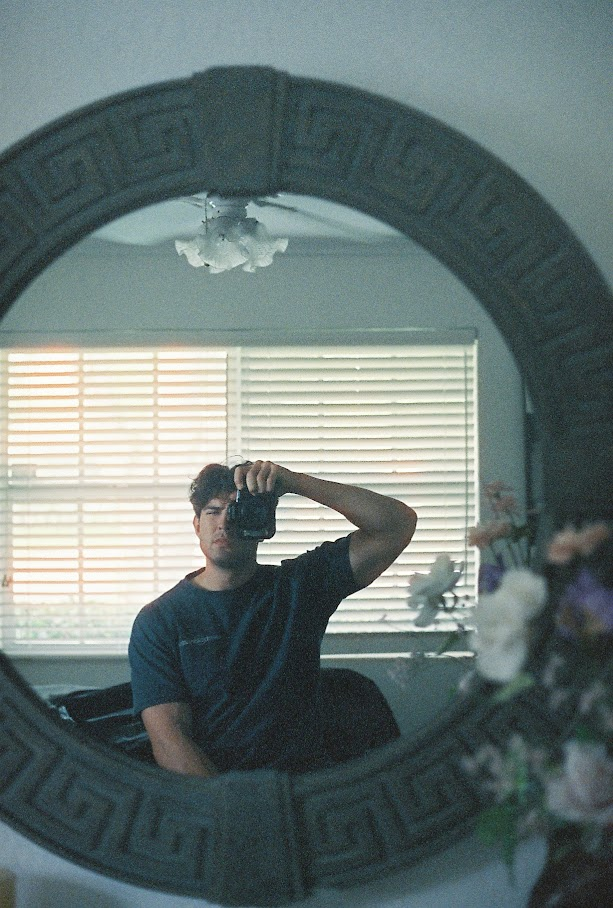
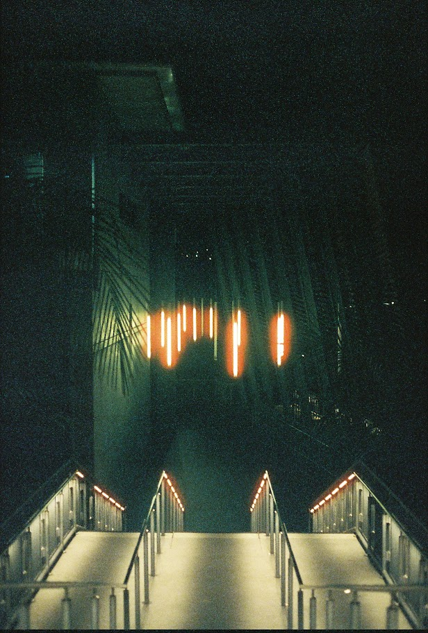
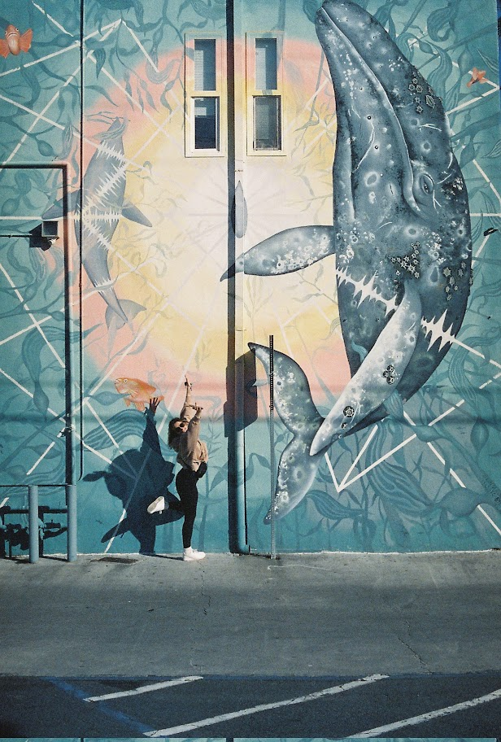

Occasioanly I even make it through a roll of film. Here are some of my favorite shots from the aftermath
My kit

I primarily shoot with a Canon EOS 5.
Shot on Ilford Delta 3200
Lampstore, Gaslamp Quater, San DiegoConstruction site, Gaslamp Quater, San DiegoGaslamp Quarter, San DiegoSan DiegoUCSD Health La Jolla Station
Shot on Cinstill 800T

City College at Night, San Diego

Amelia and Mural, EncinitasSwami's Beach, EncinitasChandelier, somewhere in the Met, NYCFountain outside of the Met, NYCGarden bar on top of the Met, NYCBest view in the city, NYCNieces, UP of Michigan
Shot on Portra 400
Coronado, San DiegoCoronado, San Diego
Shot on Fujifilm 200
Del Mar Fair, San DiegoIn motion at the fair, San Diego
Shot on Portra 400
Campground, Kings Canyon National ParkSunset, Kings Canyon National ParkA lovely hiking partner
Shot on Fujifilm 200
Coronado BeachUCSD Engineering Building, La JollaA bench, La JollaGlider Port, La Jolla